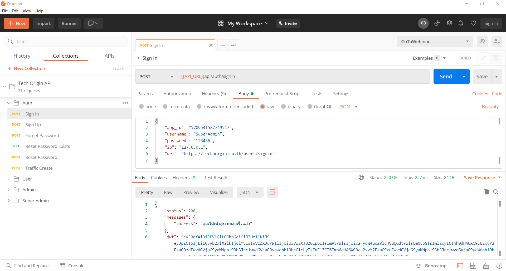

Installation
Server Requirements
Before you install Tech Origin API, make sure your server meets the following requirements:
- PHP 7.2+
- Composer (PHP package manager)
- Intl PHP Extension
- Mbstring PHP Extension
- PDO PHP Extension
- XML PHP Extension
- Ctype PHP Extension
- JSON PHP Extension
- MySQL 5.1+ or MariaDB 10.0+
Extract package
Step 1: Extract and Upload
Unzip the package. Rename the tech_origin_api directory
to your desired directory name and upload the directory to your web server.
Step 2: Create Environment File
Navigate to api directory and look for .env_MAIN file.
Duplicate and rename it as .env file.
Step 3: Creating Database
Create a database through your server control panel. If your server has phpMyAdmin, then you can also create a database using phpMyAdmin.
Step 4: Environment Variables
Change environment variables in .env file for your project.
| Variable | Description |
|---|---|
| app.baseURL |
The url where you hosted the application
Code line 25 |
| app.title |
The title of the application
Code line 28 |
| app.id |
The application id used for validations
Code line 29 |
| database.default.hostname |
The database hostname
(usually localhost or 127.0.0.1)
Code line 44 |
| database.default.database |
The database table name
Code line 46 |
| database.default.username |
The database username
Code line 47 |
| database.default.password |
The database password
Code line 48 |
| database.default.DBDriver |
The database driver
Code line 49 |
| encryption.key |
The encryption key used in the application
Code line 85 |
| jwt.secretKey |
The JSON Web Token secret key
Code line 93 |
Installing
Step 1: Install Data Tables
Navigate to api directory and run composer update
command. This will install necessary PHP packages into vendor folder.
Step 2: Install Data Tables
In api directory, run php spark migrate
command. This will generate necessary data tables in your database.
Step 3: Install Initial Data
In api directory, run php spark db:seed DataSeeder
command. This will generate necessary data as well as 3 user accounts
to get you started with the API.
| Member Account |
Username: Member Password: 123456 |
| Admin Account |
Username: Admin Password: 123456 |
| Super Admin Account |
Username: SuperAdmin Password: 123456 |
Postman
We recommend Postman as a tool to play around and test with the API. If you are not familiar with Postman, you can checkout guides and installation here.
